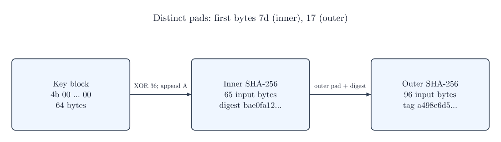
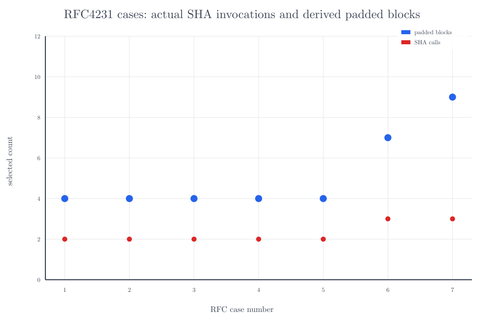
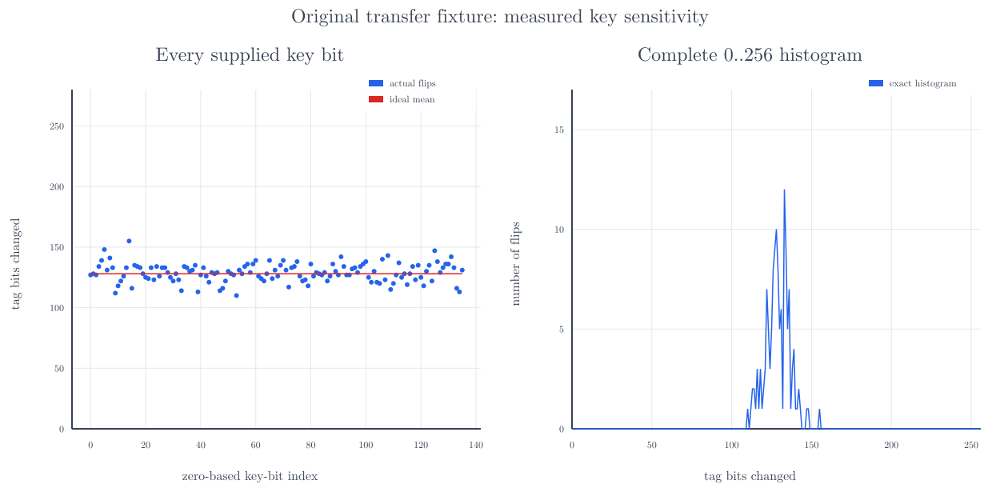
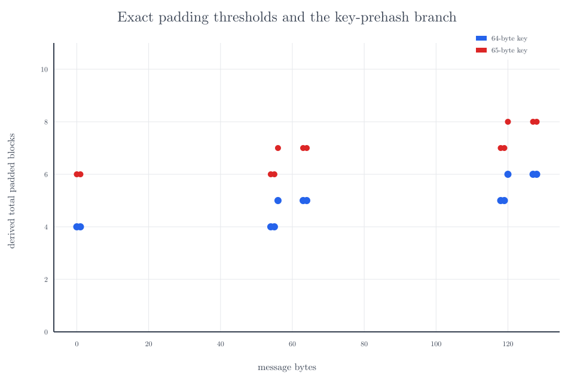

HMAC-SHA-256: two keyed hashes, exact fixtures and measured sensitivity
Abstract
A shared-key message authentication code binds a byte string to a key. HMAC-SHA-256 forms an inner keyed hash and then hashes its digest under a different keyed pad. We begin with a one-byte key and message, exposing actual intermediate bytes from the producing execution. All seven RFC4231 cases extend the original two reference examples. The original transfer-message demonstration and all 136 single-key-bit changes are retained, with a full 0..256 distance histogram that preserves the observed extrema. Padding boundaries and long keys explain the selected SHA work and the implementation's one-shot memory cost. The sensitivity experiment describes these fixtures; it is not a proof of security.
One byte of key, two different pads
Use the public key byte ASCII K (hex 4b) and message byte ASCII A (hex 41). SHA-256 has a 64-byte input block and 32-byte digest. Zero-pad the one-byte key to 64 bytes. Its first inner-pad byte is 4b XOR36 =7d; the other 63 are 36. The first outer-pad byte is 4b XOR5c =17; the others are 5c. Concatenating the inner pad and message supplies 65 bytes to the inner SHA call. Concatenating the outer pad and actual 32-byte inner digest supplies 96 bytes to the outer call.
This table and native diagram display actual bytes captured during one execution; they do not recompute an illustrative substitute for the inner digest. All displayed keys in this report are public fixtures. The educational trace owns key-derived material and does not erase it securely.
#include <dm/dm.hpp>
int main() {
std::filesystem::create_directories("build");
const auto t = dm::algorithms::hmac_sha256_trace("K", "A");
std::print("| byte position | normalized key hex | inner pad hex | outer pad hex |\n| ---: | --- | --- " "| --- |\n");
for (std::size_t i = 0; i < 4; ++i)
std::print("| {} | {:02x} | {:02x} | {:02x} |\n", i, t.key_block[i],
t.inner_pad[i], t.outer_pad[i]);
const auto inner =
dm::algorithms::to_hex(t.inner_digest), tag =
dm::algorithms::to_hex(t.run.tag);
std::print("\nActual inner digest: {}\n\nActual complete tag: {}\n\nSHA calls {}; input bytes hashed " "{}; padded SHA blocks {}.\n",
inner, tag, t.run.work.sha_calls, t.run.work.bytes_hashed,
t.run.work.padded_blocks);
dm::graphics::Diagram d(65, 1100);
dm::graphics::DiagramNodeStyle style;
style.width = 4.6;
style.height = 2.8;
style.font_size = 21;
d.node("key", {0, 0}, "Key block\n4b 00 ... 00\n64 bytes", style).node(
"inner", {7, 0},
std::format("Inner SHA-256\n65 input bytes\ndigest {}...",
inner.substr(0, 8)), style).node("outer", {14, 0},
std::format(
"Outer SHA-256\n96 input bytes\ntag {}...",
tag.substr(0, 8)), style).edge("key", "inner", "XOR 36; append A").edge("inner", "outer", "outer pad + digest").text({7, 3}, "Distinct pads: first bytes 7d (inner), 17 (outer)", 24).save_svg("build/hmac_tiny.svg");
if (t.inner_pad[0] != 0x7d || t.outer_pad[0] != 0x17 ||
t.run.work.bytes_hashed != 161)
throw std::runtime_error("tiny pads");
}| byte position | normalized key hex | inner pad hex | outer pad hex |
|---|---|---|---|
| 0 | 4b | 7d | 17 |
| 1 | 00 | 36 | 5c |
| 2 | 00 | 36 | 5c |
| 3 | 00 | 36 | 5c |
Actual inner digest: bae0fa12cce99ec473a1956aee68148ad934cd24d772545033b1b6c9cc0c9948
Actual complete tag: a498e6d5b78640bc0f4157bbeb83d4f0b80e8061d1eb0e3bb5858e6207a12422
SHA calls 2; input bytes hashed 161; padded SHA blocks 4.

Derive the construction, with long-key normalization
Let B=64 bytes and H=SHA-256. Define a normalized key block K0 by hashing K first when its length exceeds B, then padding the resulting 32 bytes with zeros to B. For keys of length at most B, pad the supplied bytes directly. Exactly 64 bytes is not the prehash branch. Then
The exponent 64 means repetition of a byte, not exponentiation. Concatenation uses raw bytes, including zeros and values above 127. The outer input always has 96 bytes. The API returns all 32 tag bytes; hexadecimal formatting produces 64 lowercase characters.
A plain public hash supplies no shared-key authentication. The naive secret-prefix hash H(K||m) also has a length-extension problem for Merkle–Damgard hashes: its published digest can serve as a chaining state for an extended padded input. HMAC's outer digest is over the different keyed pad and a fixed-length inner digest; extending that outer input does not construct the required tag of an extended message. This explains the structural distinction, while a security argument still depends on assumptions about the hash and key. Neither reference-vector agreement nor a finite sensitivity plot proves unforgeability.
All seven RFC4231 examples
The original RFC cases 1 and 2 are retained. Cases 3 and 4 supply repeated binary message bytes; case 4's key contains bytes 01 through 19 hex. Cases 6 and 7 use 131-byte keys, exercising prehashing. Case 5 publishes only the leading 128 bits. Its row checks exactly that prefix, while the implementation still returns a full 256-bit tag.
#include <dm/dm.hpp>
int main() {
std::filesystem::create_directories("build");
const auto cases = dm::algorithms::hmac_rfc4231_cases();
std::vector<double> x, blocks, calls;
std::print("| RFC case | key bytes | message bytes | key prehashed | compared bits | match |\n| ---: | " "---: | ---: | --- | ---: | --- |\n");
for (const auto &c : cases) {
const auto t = dm::algorithms::hmac_sha256_trace(c.key, c.message);
const auto full = dm::algorithms::to_hex(t.run.tag);
const bool match =
full.substr(0, c.expected_hex.size()) == c.expected_hex;
std::print("| {} | {} | {} | {} | {} | {} |\n", c.case_number,
c.key.size(), c.message.size(), t.run.key_hashed,
4 * c.expected_hex.size(), match);
x.push_back(c.case_number);
blocks.push_back(t.run.work.padded_blocks);
calls.push_back(t.run.work.sha_calls);
if (!match)
throw std::runtime_error("RFC4231 mismatch");
}
for (const auto &c : cases)
std::print("\nCase {} actual full tag: {}\n", c.case_number,
dm::algorithms::hmac_sha256_hex(c.key, c.message));
auto p = dm::graphics::RPlot::create();
p.points(x, blocks, "padded blocks", {37, 99, 235}, 7.).points(
x, calls, "SHA calls", {220, 38, 38}, 5.).title("RFC4231 cases: actual SHA invocations and derived padded blocks").x_label("RFC case number").y_label("selected count").y_limits(0, 12).save_svg("build/hmac_rfc.svg");
}| RFC case | key bytes | message bytes | key prehashed | compared bits | match |
|---|---|---|---|---|---|
| 1 | 20 | 8 | false | 256 | true |
| 2 | 4 | 28 | false | 256 | true |
| 3 | 20 | 50 | false | 256 | true |
| 4 | 25 | 50 | false | 256 | true |
| 5 | 20 | 20 | false | 128 | true |
| 6 | 131 | 54 | true | 256 | true |
| 7 | 131 | 152 | true | 256 | true |
Case 1 actual full tag: b0344c61d8db38535ca8afceaf0bf12b881dc200c9833da726e9376c2e32cff7
Case 2 actual full tag: 5bdcc146bf60754e6a042426089575c75a003f089d2739839dec58b964ec3843
Case 3 actual full tag: 773ea91e36800e46854db8ebd09181a72959098b3ef8c122d9635514ced565fe
Case 4 actual full tag: 82558a389a443c0ea4cc819899f2083a85f0faa3e578f8077a2e3ff46729665b
Case 5 actual full tag: a3b6167473100ee06e0c796c2955552bfa6f7c0a6a8aef8b93f860aab0cd20c5
Case 6 actual full tag: 60e431591ee0b67f0d8a26aacbf5b77f8e0bc6213728c5140546040f0ee37f54
Case 7 actual full tag: 9b09ffa71b942fcb27635fbcd5b0e944bfdc63644f0713938a7f51535c3a35e2

Preserve the transfer example and every key-bit change
Use the original public key shared-secret-key and message transfer $100 to Alice. Ordinary array equality demonstrates that recomputation agrees, while the original changed payee/amount and guessed key disagree. This is a functional equality example, not a constant-time verification API. A real message protocol also needs an unambiguous encoding and its own replay handling; those behaviors are outside this hash calculation. A MAC does not encrypt the message or distinguish which holder of a shared key produced it.
The 17-byte key gives 136 single-bit changes. Bit j changes byte floor(j/8), bit (j mod 8), least-significant bit first. For each complete changed key, the native helper computes an actual tag and its exact Hamming distance from the baseline. The full histogram has 257 bins for distances 0 through 256; no observation is clamped into a convenient endpoint bin. Under an ideal independent-bit comparison, the illustrative distance distribution would be Binomial(256,1/2), with mean 128 and standard deviation 8. Distances in this deterministic neighboring-key experiment are not asserted independent or binomial.
#include <dm/dm.hpp>
int main() {
std::filesystem::create_directories("build");
const std::string key =
"shared-secret-key", message = "transfer $100 to Alice";
const auto r = dm::algorithms::hmac_key_avalanche(key, message);
const bool genuine =
dm::algorithms::hmac_sha256(key, message) == r.baseline;
const bool tampered =
dm::algorithms::hmac_sha256(key, "transfer $900 to Mallory") ==
r.baseline;
const bool wrong =
dm::algorithms::hmac_sha256("guessed-key", message) == r.baseline;
std::print("Genuine equality {}; tampered equality {}; guessed-key equality {}.\n\nComplete key flips " "{}; actual mean {:.9f}; minimum {}; maximum {} of 256 bits.\n",
genuine, tampered, wrong, r.distances.size(), r.mean, r.minimum,
r.maximum);
std::print("\n| exact changed-bit count | frequency |\n| ---: | ---: |\n");
std::vector<double> bins, counts, index, distance;
for (std::size_t d = 0; d < r.histogram.size(); ++d) {
bins.push_back(d);
counts.push_back(r.histogram[d]);
if (r.histogram[d])
std::print("| {} | {} |\n", d, r.histogram[d]);
}
for (std::size_t i = 0; i < r.distances.size(); ++i) {
index.push_back(i);
distance.push_back(r.distances[i]);
}
auto left =
dm::graphics::RPlot::create(), right = dm::graphics::RPlot::create();
left.points(index, distance, "actual flips", {37, 99, 235}, 3.).line(
{0., double(r.distances.size() - 1)}, {128., 128.}, "ideal mean",
{220, 38, 38}, 1.5).title("Every supplied key bit").x_label(
"zero-based key-bit index").y_label("tag bits changed").y_limits(
0, 280);
right.line(bins, counts, "exact histogram", {37, 99, 235}, 1.5).title(
"Complete 0..256 histogram").x_label("tag bits changed").y_label(
"number of flips").x_limits(0, 256).y_limits(0,
double(
*std::max_element(
r.histogram.begin(),
r.histogram.end())) + 5);
auto layout = dm::graphics::RLayout::create(1, 2);
layout.add(left).add(right).size(1250, 620).title("Original transfer fixture: measured key sensitivity").fit_panels().save_svg("build/hmac_avalanche.svg");
if (!genuine || tampered || wrong ||
std::accumulate(r.histogram.begin(), r.histogram.end(), std::size_t{0}) !=
136)
throw std::runtime_error("original controls");
}Genuine equality true; tampered equality false; guessed-key equality false.
Complete key flips 136; actual mean 128.845588235; minimum 110; maximum 155 of 256 bits.
| exact changed-bit count | frequency |
|---|---|
| 110 | 1 |
| 112 | 1 |
| 113 | 2 |
| 114 | 2 |
| 115 | 1 |
| 116 | 3 |
| 117 | 1 |
| 118 | 3 |
| 119 | 1 |
| 120 | 2 |
| 121 | 3 |
| 122 | 7 |
| 123 | 5 |
| 124 | 3 |
| 125 | 5 |
| 126 | 8 |
| 127 | 9 |
| 128 | 10 |
| 129 | 8 |
| 130 | 5 |
| 131 | 6 |
| 132 | 1 |
| 133 | 12 |
| 134 | 9 |
| 135 | 5 |
| 136 | 7 |
| 137 | 1 |
| 138 | 3 |
| 139 | 4 |
| 140 | 1 |
| 141 | 1 |
| 142 | 2 |
| 143 | 1 |
| 147 | 1 |
| 148 | 1 |
| 155 | 1 |

The complete experiment is bounded before baseline hashing: default 4096 key-bit flips and one million combined key/message input bytes, with zero disabling either policy. Empty keys have no bits to flip: they still produce a baseline, but return an empty distance vector and has_flips=false, with zero summary sentinels. These limits throw rather than sample or truncate. The helper stores 8k distances and a fixed histogram; it performs 8k+1 complete HMAC evaluations for a k-byte key. Their cost is O((8k+1)(k+m+1)) time and O(k+m+8k+1) additional working/output storage.
Padding boundaries, selected work and exact admission
SHA-256 appends one marker byte, zeros and an eight-byte original bit length. For an L-byte SHA input, its padded block count is
With no key prehash, HMAC supplies 64+m bytes to the inner hash and 96 to the outer hash, so total padded blocks are b(64+m)+2. This jumps between message lengths 55 and 56, then repeats every 64 bytes. For k>64, add b(k) blocks and a third SHA call. The unpadded bytes hashed are 160+m+(k if k>64 else 0). These are call-boundary counters and padding-derived totals, not measured timing, an internal SHA trace or total allocation traffic.
The existing one-shot SHA implementation copies its input and appends padding. HMAC also constructs concatenated pad/message inputs. Therefore ordinary execution has O(k+m+1) time and O(k+m+1) additional storage, not the constant working memory of a streaming implementation. The fixed intermediate trace adds 256 byte values beyond its ordinary run result, plus metadata/alignment; it retains no message copy or round history. All arrays own their bytes. Complete input caps count original key plus message bytes once, not memory use. Legacy tag/hex functions have no optional policy cap; representable length/counter checks still apply.
#include <dm/dm.hpp>
int main() {
std::filesystem::create_directories("build");
std::vector<double> x, short_blocks, long_blocks;
std::print("| message bytes | key bytes | SHA calls | unpadded bytes hashed | padded blocks |\n| ---: | " "---: | ---: | ---: | ---: |\n");
for (std::size_t m : {0, 1, 54, 55, 56, 63, 64, 118, 119, 120, 127, 128}) {
const std::string message(m, 'x');
x.push_back(m);
for (std::size_t k : {64, 65}) {
const auto r =
dm::algorithms::hmac_sha256_run(std::string(k, 'k'), message);
std::print("| {} | {} | {} | {} | {} |\n", m, k, r.work.sha_calls,
r.work.bytes_hashed, r.work.padded_blocks);
(k == 64 ? short_blocks : long_blocks).push_back(
r.work.padded_blocks);
}
}
const auto exact = dm::algorithms::hmac_sha256_run("k", "m", {2});
bool inputcap = false, flipcap = false;
try {
(void) dm::algorithms::hmac_sha256_trace("k", "m", {1});
} catch (const std::length_error &) {
inputcap = true;
}
try {
(void) dm::algorithms::hmac_key_avalanche("k", "m", 7);
} catch (const std::length_error &) {
flipcap = true;
}
const auto empty = dm::algorithms::hmac_key_avalanche("", "");
const std::string binary_key("\0\xff", 2), binary_message("a\0b", 3);
std::print("\nExact 2-byte input accepted {}; one-short input rejected {}; one-short flip limit rejected " "{}; empty-key has flips {}.\n\nEmpty key/message tag: {}\n\nBinary key/message tag: {}\n",
exact.tag == dm::algorithms::hmac_sha256("k", "m"), inputcap,
flipcap, empty.has_flips, dm::algorithms::to_hex(empty.baseline),
dm::algorithms::hmac_sha256_hex(binary_key, binary_message));
auto p = dm::graphics::RPlot::create();
p.points(x, short_blocks, "64-byte key", {37, 99, 235}, 6.).points(
x, long_blocks, "65-byte key", {220, 38, 38}, 5.).title(
"Exact padding thresholds and the key-prehash branch").x_label(
"message bytes").y_label("derived total padded blocks").y_limits(
0, 11).save_svg("build/hmac_boundaries.svg");
if (!inputcap || !flipcap || empty.has_flips ||
empty.baseline != dm::algorithms::hmac_sha256("", ""))
throw std::runtime_error("boundary controls");
}| message bytes | key bytes | SHA calls | unpadded bytes hashed | padded blocks |
|---|---|---|---|---|
| 0 | 64 | 2 | 160 | 4 |
| 0 | 65 | 3 | 225 | 6 |
| 1 | 64 | 2 | 161 | 4 |
| 1 | 65 | 3 | 226 | 6 |
| 54 | 64 | 2 | 214 | 4 |
| 54 | 65 | 3 | 279 | 6 |
| 55 | 64 | 2 | 215 | 4 |
| 55 | 65 | 3 | 280 | 6 |
| 56 | 64 | 2 | 216 | 5 |
| 56 | 65 | 3 | 281 | 7 |
| 63 | 64 | 2 | 223 | 5 |
| 63 | 65 | 3 | 288 | 7 |
| 64 | 64 | 2 | 224 | 5 |
| 64 | 65 | 3 | 289 | 7 |
| 118 | 64 | 2 | 278 | 5 |
| 118 | 65 | 3 | 343 | 7 |
| 119 | 64 | 2 | 279 | 5 |
| 119 | 65 | 3 | 344 | 7 |
| 120 | 64 | 2 | 280 | 6 |
| 120 | 65 | 3 | 345 | 8 |
| 127 | 64 | 2 | 287 | 6 |
| 127 | 65 | 3 | 352 | 8 |
| 128 | 64 | 2 | 288 | 6 |
| 128 | 65 | 3 | 353 | 8 |
Exact 2-byte input accepted true; one-short input rejected true; one-short flip limit rejected true; empty-key has flips false.
Empty key/message tag: b613679a0814d9ec772f95d778c35fc5ff1697c493715653c6c712144292c5ad
Binary key/message tag: 583abab72103e868f70949930ce5a55b969434cfa8f51205333f72ab130e6d9d

Validation and primary references
Native sanitizer tests check actual normalized keys, pads, inner/final digests and work across key/message boundaries, all seven published fixtures, binary inputs, empty keys, exact/one-short limits and independent ownership. Frozen pre-conversion tags and independent Python hmac/hashlib comparisons verify complete tags and captured intermediates. All 136 original key changes are independently checked. Documentation examples, symbol hovers, real MEP executions, inspected native figures and byte-checked image/result exports are required before retiring the legacy report.
The construction follows [RFC2104, HMAC: Keyed-Hashing for Message Authentication](https://www.rfc-editor.org/rfc/rfc2104.html), H. Krawczyk, M. Bellare and R. Canetti,1997. The public conformance data follow [RFC4231, section 4](https://www.rfc-editor.org/rfc/rfc4231.html#section-4), M. Nystrom,2005. The case 5 prefix check is explicitly distinct from full 256-bit conformance. Neither the plots nor this educational implementation claim a security certification or a production verification protocol.